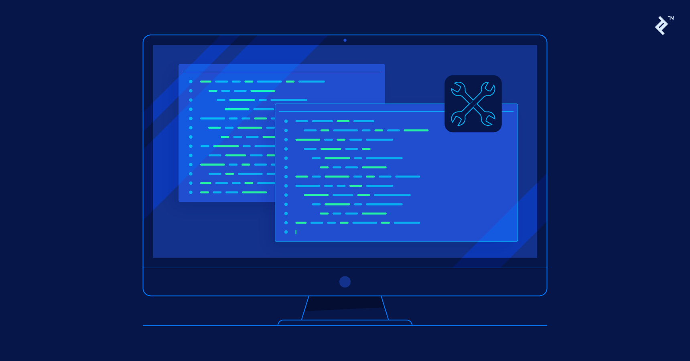
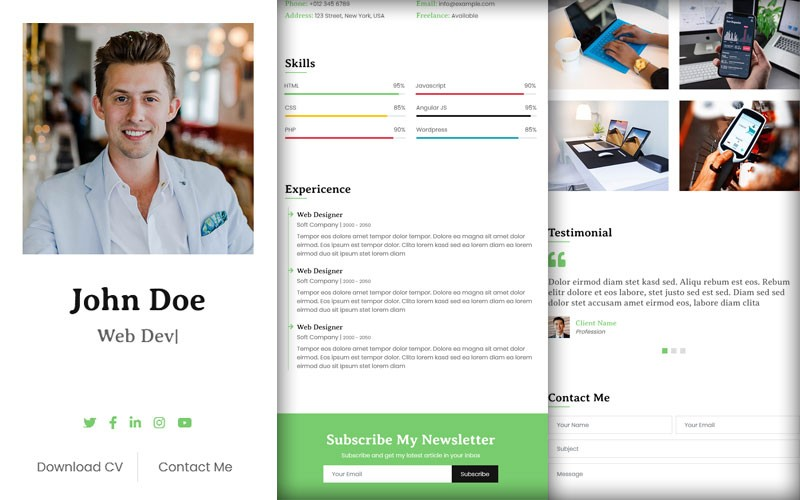

MIPS Assembly Language Calculator
- Designed and implemented a simple calculator in MIPS Assembly language to perform arithmetic operations.
- Included error handling for common user errors (e.g., division by zero).
- Tested and debugged the program to ensure accurate and reliable calculations.

C Language Command-Line Utility Tool
- Created custom Unix command-line utilities using C programming language.
- Tested and debugged code in mobaXterm to ensure compatibility across different Unix systems.
- Optimized code for better performance in text processing and data handling.

Personal Portfolio Website
- Developed a personal portfolio website using HTML and CSS to showcase my projects and skills.
- Implemented responsive design techniques for optimal viewing on all devices.
- Utilized VS Code for development.
- Integrated contact form with validation for user input.